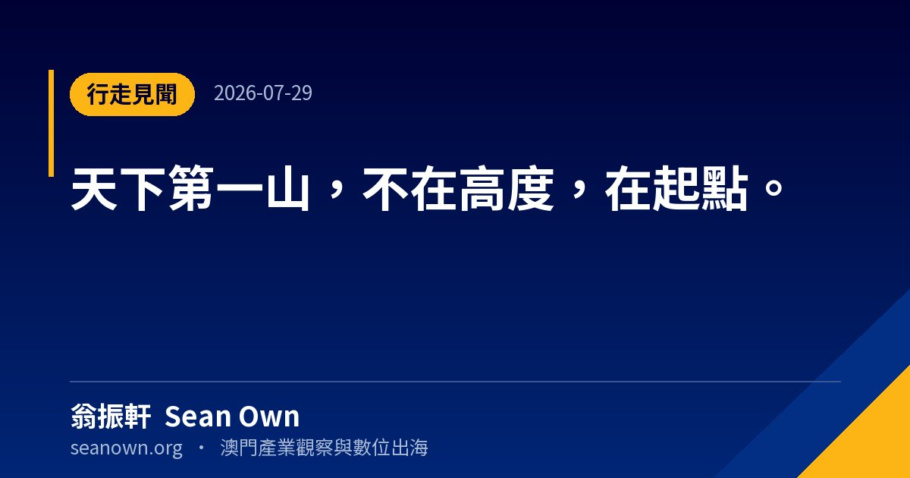

輯 序
日子不只是被填滿，更該被讀出滋味。這一輯收錄隨筆、節氣、書摘與行走——從一句話的反思，到一場江西七日、一封潮汕僑批；從付航的父親智慧，到《思考，快與慢》的認知偏誤，再到辜朝明「資產負債表衰退」的宏觀啟示。
慢下來，才看得見。
按時間倒序 · 最新在前
 01 / 102026.09.09· 澳門
01 / 102026.09.09· 澳門近期反思：十二句話，十二幅手繪
把近期的閱讀、行走與觀察，濃縮成十二句話。每一句配一幅手繪線稿：左邊是畫，右邊是原話、背景與認知啟示。不追求體系完整…
› 02 / 102026.09.07· 澳門
02 / 102026.09.07· 澳門《思考，快與慢》精讀筆記
丹尼爾·卡尼曼（Daniel Kahneman, 1934–2024）——諾貝爾經濟學獎得主的代表作，行為經濟學奠基…
› 03 / 102026.08.19· 澳門
03 / 102026.08.19· 澳門七夕：它原本不是情人節✨
很多人把七夕當作中國情人節，其實根源是上古星宿崇拜。真實天文：銀河兩側，牛郎星與織女星，實際相距16光年，宇宙之中永…
› 04 / 102026.08.17· 澳門
04 / 102026.08.17· 澳門讀懂辜朝明「資產負債表衰退」📊
為什麼降息、印錢，有時候救不了經濟？🔹核心3個邏輯1️⃣泡沫破裂之後：股價房價資產大幅…
› 05 / 102026.08.10· 澳門
05 / 102026.08.10· 澳門兩個念頭：出發與手相
兩則短念頭，一篇記下來。 無名指長過食指｜手相啟示民間手相說法：男看左手，女看右手，若是無名指長過食指，一生會遇上三…
› 06 / 102026.08.08· 澳門
06 / 102026.08.08· 澳門八八·爸爸節｜一段烽火歲月誕生的本土節日
1945抗戰末年，上海還在佔領之下，滿城飽經戰亂。梅蘭芳、顏惠慶等十位上海社…
› 07 / 102026.08.07· 澳門
07 / 102026.08.07· 澳門什麼！？今晚立秋！？（8月7日 19:42）
我還正準備感受盛夏，立秋就悄悄來了，暑氣依舊熾熱，秋意卻已登場。📜小故事…
› 08 / 102026.08.05· 澳門
08 / 102026.08.05· 澳門付航：一位父親最高級的智慧
看付航拿下《喜劇之王》總冠軍，最打動我的不只是舞台上的表演，而是他父親的兩句通透智慧的話。…
›
09 / 102026.07.29· 吉安市江西七日：從井岡山到滕王閣
七月下旬，贛北到贛西南，四天一千二百公里。原本只是商務行程中間的空檔，走完才發現這幾站串成一條線。七篇併一篇，按走的…
› 10 / 102026.07.23· 汕頭市
10 / 102026.07.23· 汕頭市潮汕行：一封僑批的兩端
七月二十二到二十三日，揭陽、汕頭。三篇併一篇：實業、基建、鄉愁，三個角度看同一個地方。 07.22 揭陽實業傳奇：康…
›